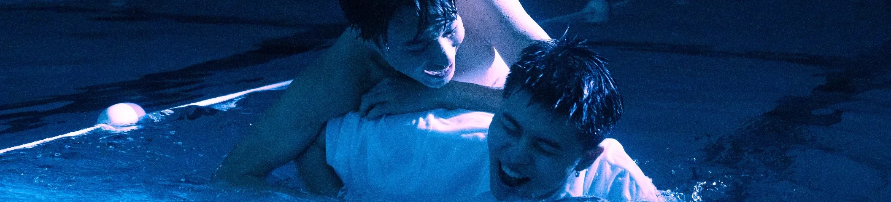
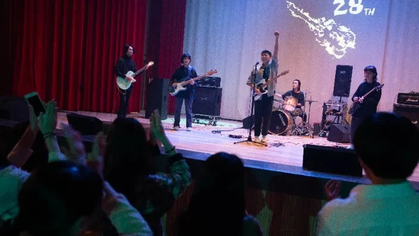

電影・品牌紀錄・社群影音
彭傑影像作品集
《我的搖滾青春》編劇・美術・後期製作
精選作品
長影片
Shorts
完整片單

關於彭傑
國立臺灣藝術大學電影學系畢業。參與電影短片、品牌活動紀錄、街訪與社群影音製作，工作涵蓋編劇、美術、攝影與後期。
畢業製作《我的搖滾青春》獲邀於 2023 桃園電影節展映，並入圍韓國酷兒影展、北京酷兒影展及印度浦那電影節。

電影・品牌紀錄・社群影音
《我的搖滾青春》編劇・美術・後期製作

國立臺灣藝術大學電影學系畢業。參與電影短片、品牌活動紀錄、街訪與社群影音製作，工作涵蓋編劇、美術、攝影與後期。
畢業製作《我的搖滾青春》獲邀於 2023 桃園電影節展映，並入圍韓國酷兒影展、北京酷兒影展及印度浦那電影節。